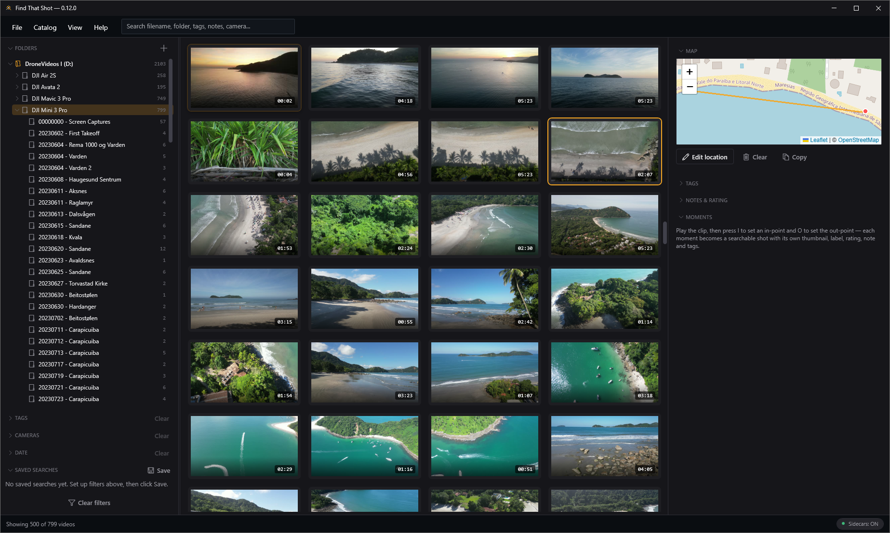
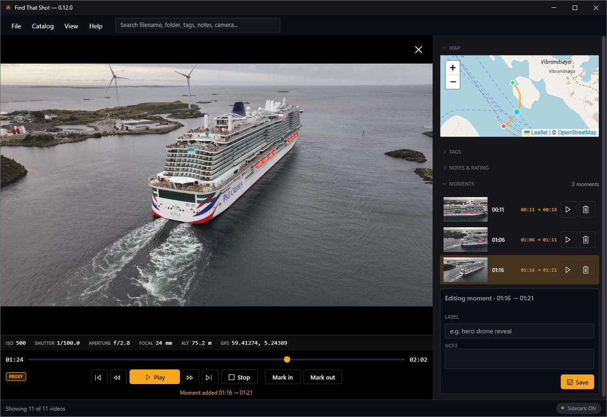

A desktop app that catalogs, tags, and instantly searches your entire local video archive — internal disks, externals, offline drives — without ever moving, renaming, or modifying a single source file.

Your footage is never modified. Source video files are never moved, renamed, deleted, or touched — the app only writes its own catalog, thumbnails, and (optionally) sidecar files.
Catalog once, then slice your library by text, tags, rating, status, camera, date, location, and more — even for clips on drives that are currently unplugged.
AND-matched tokens across filename, path, location, notes, camera & tags. Save any filter combo as a live, self-updating collection.
A shot is rarely a whole file. Drop timestamped in/out markers with their own label, rating, notes & tags, and jump straight back to them.
Preview clips in-app with an FFmpeg-powered player (H.264/265, ProRes, DNxHD…) while you tag, rate and take notes side-by-side.
Every geotagged clip plotted on a clustered offline map. Click a region to scope your whole grid to "where did I shoot that?"
A year-by-month heatmap bucketed by when footage was actually captured. Click a month to scope the grid to it.
Instantly group copies by metadata fingerprint — even across offline backups — and clear redundant catalog entries (never the files).
Opt-in CLIP model runs fully offline on your CPU. Get subject-tag suggestions and search by plain English — "drone shot over snowy mountains at sunset."
Optionally write a tiny JSON next to each video so your tags, ratings, notes & moments travel with the footage to any machine.
A read-only dashboard of your whole archive, plus rotating, restorable backups of your catalog so curation work is never lost.
Drop in your DJI clips and Find That Shot reads the .SRT flight logs that ship next to them — turning raw footage into a geotagged, flyable, fully-searchable map of where you've been.
The GPS takeoff fix is lifted straight from the flight log — no manual tagging needed.
The whole route is drawn as a polyline with start & end markers and per-point altitude.
A marker rides the path in sync with playback; an overlay shows ISO, shutter, aperture & altitude frame-by-frame.
GPU-accelerated decoding plays high-bitrate DJI & GoPro clips at real time, not slow-motion.

Power features for serious archives — explore whichever you care about, skip the rest.
An opt-in CLIP model runs fully offline on your CPU — nothing is uploaded. It looks at frames sampled across each clip, so a match counts even if the subject only appears halfway through.
A shot is rarely a whole clip. While reviewing, press I and O to capture a timestamped in/out range with its own thumbnail, label, rating, notes & tags.
Curate fearlessly. Every cleanup tool touches only the catalog — your source files are never moved, renamed, or deleted.
Point the app at any root directory on any drive — add as many as you like. Nothing is copied or moved.
It walks each folder, reads technical metadata with FFprobe, parses dates & locations, and generates thumbnails in the background.
Search, filter, tag, rate, mark moments, and review — across your entire library, online or offline.
A self-contained Windows build with a one-click installer (auto-updates) or a portable zip. Free and open source under the GPLv3.
Requires Windows 10/11. FFmpeg is bundled — or install with winget install Gyan.FFmpeg.
First launch: the build isn't code-signed yet, so Windows may show “Windows protected your PC.” That's expected — click More info, then Run anyway. It's fully open source, so you can read every line on GitHub first if you like. And your footage is never modified — the app only ever reads your video files.
Hit a problem? In the app, use Help → Diagnostics → Copy full report and paste it into your bug report or email — it includes the version and recent logs, which makes issues far easier to fix.